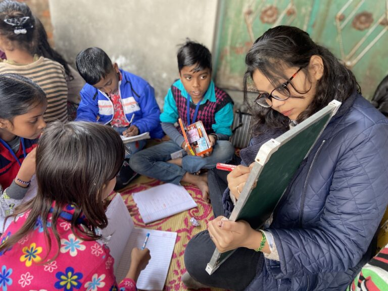

Our Activities

1. Gender Sensitization in Schools & Colleges
Objective: Reduce gender stereotypes from early age.
Activities:
Gender-equality clubs in schools.
Training for teachers on inclusive education.
Workshops on consent, respect, and healthy relationships.
Curriculum promoting equality and preventing bullying.
2.Legal Literacy & Rights Awareness Program
Objective: Build understanding of legal protections and women’s rights.
Activities:
Sessions on inheritance laws, marriage rights, workplace laws, anti-harassment acts.
Free legal aid and referrals.
Distribution of simple booklets on women’s rights.
3.Reproductive Health & Rights Program
Objective: Improve access to safe, informed reproductive and sexual health.
Activities:
Workshops on puberty, menstruation, reproductive rights.
Mobile health camps for maternal health, nutrition, counseling.
Combatting stigma around contraception or reproductive choices.